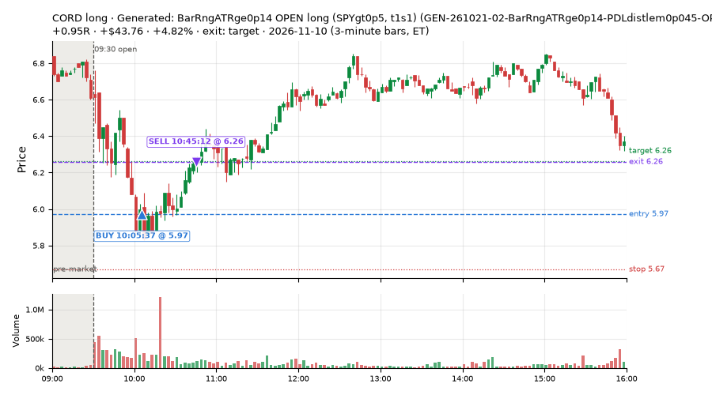
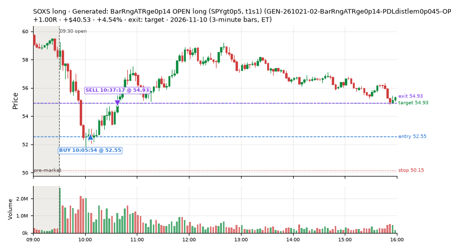
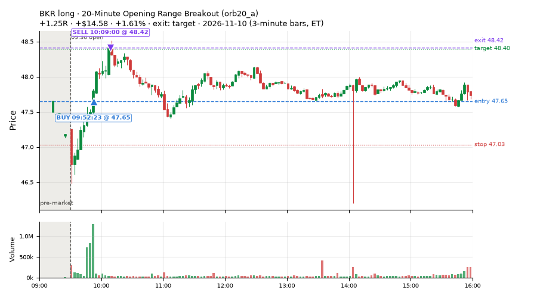
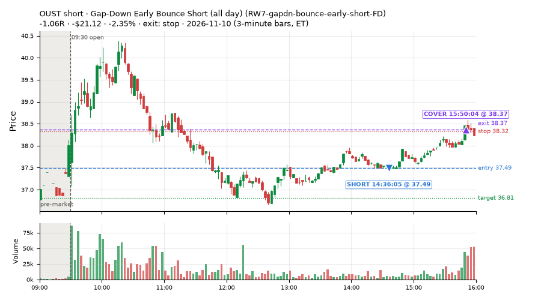
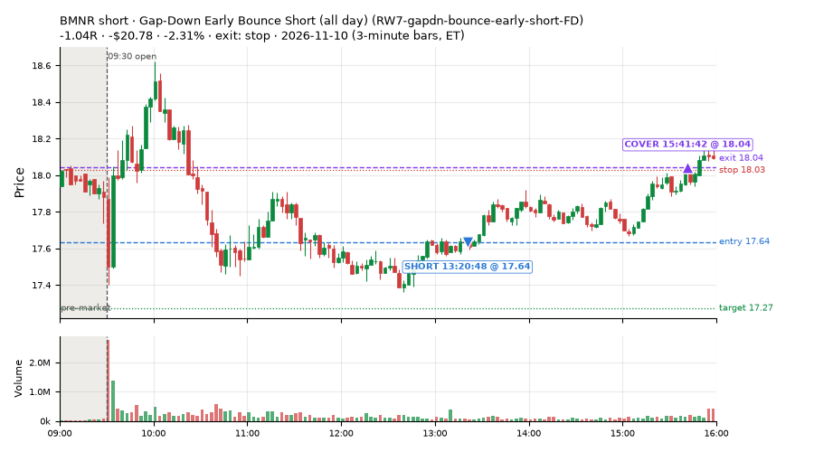
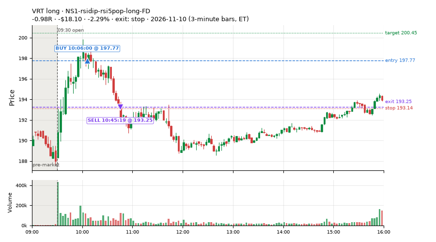
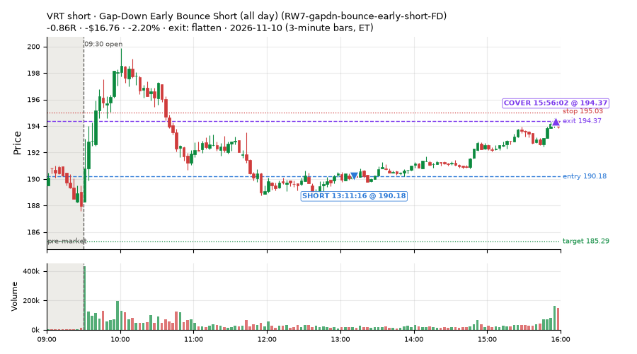
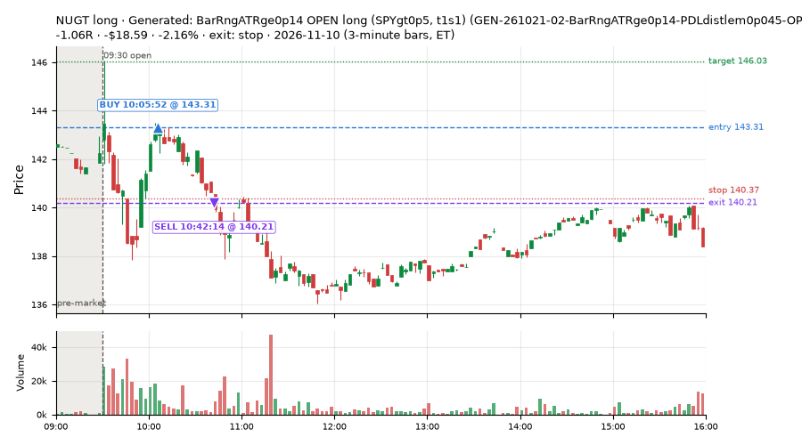

127 trades · win rate 28% · P/L $-470.99
PROBATION: no live setup has passed both locked test periods. 10 owner-directed setups added 2026-10-08 (MarcoFlow top 5 + 5 new), untested live. RW6G1 (RW6 + VWAP band guard) added 2026-10-09, probation.

| Symbol | Setup | Side | In | Out | Entry | Exit | Exit reason | % gained | P/L |
|---|---|---|---|---|---|---|---|---|---|
| CORD | Generated: BarRngATRge0p14 OPEN long (SPYgt0p5, t1s1) (GEN-261021-02-BarRngATRge0p14-PDLdistlem0p045-OPEN-SPYgt0p5-t1s1-long) | long | 10:05 | 10:45 | 5.97 | 6.26 | target | +4.82% | $43.76 |
| SOXS | Generated: BarRngATRge0p14 OPEN long (SPYgt0p5, t1s1) (GEN-261021-02-BarRngATRge0p14-PDLdistlem0p045-OPEN-SPYgt0p5-t1s1-long) | long | 10:05 | 10:37 | 52.55 | 54.93 | target | +4.54% | $40.53 |
| BKR | 20-Minute Opening Range Breakout (orb20_a) | long | 09:52 | 10:09 | 47.65 | 48.42 | target | +1.61% | $14.58 |
| Symbol | Setup | Side | In | Out | Entry | Exit | Exit reason | % lost | P/L |
|---|---|---|---|---|---|---|---|---|---|
| OUST | RW7-gapdn-bounce-early-short-FD | short | 14:36 | 15:50 | 37.49 | 38.37 | stop | -2.35% | $-21.12 |
| BMNR | RW7-gapdn-bounce-early-short-FD | short | 13:20 | 15:41 | 17.64 | 18.04 | stop | -2.31% | $-20.78 |
| VRT | NS1-rsidip-rsi5pop-long-FD | long | 10:06 | 10:45 | 197.77 | 193.25 | stop | -2.29% | $-18.10 |
| VRT | RW7-gapdn-bounce-early-short-FD | short | 13:11 | 15:56 | 190.18 | 194.37 | flatten | -2.20% | $-16.76 |
| NUGT | GEN-261021-02-BarRngATRge0p14-PDLdistlem0p045-OPEN-SPYgt0p5-t1s1-long | long | 10:05 | 10:42 | 143.31 | 140.21 | stop | -2.16% | $-18.59 |








Signal to fill: median 2s, 90th percentile 4s (127 trades). Bars close each minute; the order follows the bar close.
Best excursion (MFE): median 0.20R; worst (MAE) median 0.79R. 55% of trades never got +0.25R in our favour; 0 reached +1R and still closed at or below 0.
| Symbol | Setup | Best R | Worst R | Closed R |
|---|---|---|---|---|
| BXP | GEN-261021-02-BarRngATRge0p14-PDLdistlem0p045-OPEN-SPYgt0p5-t1s1-long | +0.75 | -1.01 | -1.03 |
| MKC | GEN-261021-02-BarRngATRge0p14-PDLdistlem0p045-OPEN-SPYgt0p5-t1s1-long | +0.82 | -1.00 | -0.93 |
| NDAQ | MF5-flowsell-vwapup-rsi5hi | +0.39 | -1.06 | -1.04 |
| VHT | RW7-gapdn-bounce-early-short-FD | +0.23 | -1.08 | -1.08 |
| NEM | GEN-261021-02-BarRngATRge0p14-PDLdistlem0p045-OPEN-SPYgt0p5-t1s1-long | +0.26 | -1.06 | -1.04 |
| Entry time | Trades | Win | Avg R | P/L |
|---|---|---|---|---|
| 09:50-10:30 | 39 | 41% | -0.25 | $-36.31 |
| 10:30-11:30 | 4 | 50% | -0.04 | $8.76 |
| 11:30-13:00 | 30 | 43% | -0.11 | $-42.69 |
| 13:00-14:00 | 30 | 10% | -0.60 | $-219.46 |
| 14:00-16:00 | 24 | 8% | -0.53 | $-181.29 |
| Setup | Trades | Win | Avg R | Adj R (net of SPY) | Avg R ex-market (all sessions) | P/L |
|---|---|---|---|---|---|---|
| Panic Flush Reversal (3x volume) (CWT05-flush-m05-v3-long) | 7.0 | 86% | +0.27 | +0.23 | -0.02 (beta +1.82, n 59) | $34.17 |
| Generated: BarRngATRge0p14 OPEN long (SPYgt0p5, t1s1) (GEN-261021-02-BarRngATRge0p14-PDLdistlem0p045-OPEN-SPYgt0p5-t1s1-long) | 33.0 | 36% | -0.34 | +0.05 | -0.23 (beta +0.02, n 62) | $-50.57 |
| L3-gap-slope-lowdist-FD | 1.0 | 100% | +0.81 | +0.73 | -0.10 (beta -1.72, n 73) | $8.40 |
| Sellers into Strength (all day) (MF5-flowsell-vwapup-rsi5hi) owner-directed; holdouts once: Sep-Oct -0.001R n264, Apr-Jun -0.010R n1199 | 7.0 | 29% | -0.32 | +0.25 | -0.14 (beta -1.28, n 49) | $-14.27 |
| NS1-rsidip-rsi5pop-long-FD | 8.0 | 38% | -0.22 | -0.38 | -0.11 (beta +1.07, n 90) | $-28.27 |
| NS4-pm-vwap-reclaim-oversold-short-FD | 1.0 | 0% | -0.93 | -0.80 | -0.09 (beta -4.68, n 33) | $-3.69 |
| Gap-Down Early Bounce Short (all day) (RW7-gapdn-bounce-early-short-FD) | 57.0 | 14% | -0.50 | -0.09 | -0.09 (beta -1.16, n 493) | $-369.71 |
| Afternoon Blow-off Short (exhaustion_short) failed Apr-Jun holdout: -0.020R/trade over 622 trades | 6.0 | 0% | -0.76 | -0.66 | -0.09 (beta -0.62, n 89) | $-81.91 |
| exhaustion_short-FD | 1.0 | 100% | +0.29 | +0.54 | -0.26 (beta -1.39, n 86) | $3.60 |
| Index Last-Half-Hour Momentum (intraday_momentum) failed Apr-Jun holdout: -0.091R/trade over 147 trades | 3.0 | 0% | -0.35 | -0.04 | -0.35 (beta +0.24, n 52) | $-3.21 |
| 20-Minute Opening Range Breakout (orb20_a) failed Apr-Jun holdout: -0.040R/trade over 421 trades | 3.0 | 100% | +1.11 | +0.87 | +0.09 (beta +0.23, n 31) | $34.48 |
Market direction (SPY, beta 1) accounted for $-351.61 of today's $-470.99; the rest ($-119.38) came from the setups themselves. Avg R net of SPY: -0.03 (incl. a hedge leg's cost; report only).
16 setups live today. Today: 274 signals, 127 taken, 3 lost because another setup held the symbol (1%). Since 2026-10-09 (23 sessions): 9399 signals, 3846 taken, 758 lost to other setups (8%). Peak open positions today 81 of 400 slots. Earnings blackout removed 1253 symbols before scanning.
Simulated playing time (not live): 5219 what-if trades of signals not taken, avg -0.13R, 48% winners; of them 605 lost to another setup (avg +0.02R).
Silent: IDX1-qqq100-0955-TQQQ-trail, IDX1-qqq100-0955-TQQQ-hold, IDX2-spy075-0945-3x-trail, IDX3-spy075-0955-3x-trail, IDX5-spy050-0945-3x-trail · Crowded out: MF3-open-flowsell-rsi5hi, RW4-ns3-adv150-short-FD, RW4-ns3-adv150-short, MF4-h40-open-flowsell-FD, NS3-failed-vwap-reclaim-short-FD · Starved: MF1-945-flowsell-vwapup, MF5-flowsell-vwapup-rsi5hi, exhaustion_short-FD, orb20_a, RW6G1-ns2-up3-vwap2sd-short, LIQ-pdl-sweep-open15-vwap-long, ST5-pdbrkup-short-mid-t05s1-FD, ST3-rsi5up-short-pm-t1s1-FD, NS2-sma50break-overbought-short, MF1-945-flowsell-vwapup-FD
| Prio | Setup | Today sig / taken | Sessions | Signals / taken / trades | Taken/day | Expected/day | Lost to other setups | Lost to (setup n) | Top skip reasons | SIMULATED: not-taken n / avg R / win | Verdict |
|---|---|---|---|---|---|---|---|---|---|---|---|
| 1 | Early Sellers Above VWAP MF1-945-flowsell-vwapup | 1 / 0 | 13 | 56 / 5 / 5 | 0.38 | 5.33 | 0 | – | split-tape short gate 27, spread / quote / size 13, other 10 | 51 / +0.05R / 24% | starved 0.38 entries/day vs ~5.33 expected |
| 2 | NS4-pm-vwap-reclaim-oversold-short-FD NS4-pm-vwap-reclaim-oversold-short-FD | 6 / 1 | 22 | 86 / 33 / 33 | 1.50 | 3.57 | 4 | L3-gap-slope-fromopen-FD 3, NS1-rsidip-rsi5pop-long-FD 1 | split-tape short gate 17, not shortable / shorts off 14, spread / quote / size 13 | 53 / -0.09R / 40% | slow 7.5 entries/week; ~8 weeks to 60 trades |
| 3 | Panic Flush Reversal (3x volume) CWT05-flush-m05-v3-long | 8 / 7 | 15 | 95 / 59 / 59 | 3.93 | – | 0 | – | spread / quote / size 20, other 15, daily loss cap 1 | 36 / -0.74R / 56% | ok 19.7 entries/week |
| 4 | L3-gap-slope-lowdist-FD L3-gap-slope-lowdist-FD | 18 / 1 | 22 | 373 / 73 / 73 | 3.32 | 9.76 | 8 | RW6-ns2-up3-short-FD 3, NS2-sma50break-overbought-short-FD 3, L3-gap-slope-rsi5hi-FD 3 | not shortable / shorts off 148, daily loss cap 72, split-tape short gate 49 | 291 / -0.12R / 48% | ok 16.6 entries/week |
| 5 | NS1-rsidip-rsi5pop-long-FD NS1-rsidip-rsi5pop-long-FD | 10 / 8 | 22 | 128 / 90 / 90 | 4.09 | 5.39 | 5 | L3-gap-slope-fromopen-FD 5 | other 16, spread / quote / size 12, symbol held by another setup 5 | 38 / -0.06R / 66% | ok 20.5 entries/week |
| 6 | Sellers into Strength (all day) MF5-flowsell-vwapup-rsi5hi | 11 / 7 | 17 | 118 / 49 / 49 | 2.88 | 15.47 | 13 | MF5-flowsell-vwapup-rsi5hi-FD 10, MF3-open-flowsell-rsi5hi 2, CWT12-coil-k6-long 1 | split-tape short gate 25, spread / quote / size 14, symbol held by another setup 13 | 68 / -0.22R / 41% | starved 2.88 entries/day vs ~15.47 expected |
| 7 | Big Loser VWAP Reclaim Fade NS3-failed-vwap-reclaim-short | 5 / 0 | 20 | 122 / 58 / 58 | 2.90 | 3.03 | 5 | LIQ-orl-sweep-open15-s25-long 3, heat_fade_short 1, heat_fade_short-FD 1 | not shortable / shorts off 22, spread / quote / size 22, split-tape short gate 12 | 56 / -0.07R / 45% | slow 14.5 entries/week; ~4 weeks to 60 trades |
| 8 | Early Sellers into a Pop MF3-open-flowsell-rsi5hi | 1 / 0 | 17 | 113 / 15 / 15 | 0.88 | 9.19 | 38 | MF3-open-flowsell-rsi5hi-FD 35, MF5-flowsell-vwapup-rsi5hi 13, MF5-flowsell-vwapup-rsi5hi-FD 7 | symbol held by another setup 38, split-tape short gate 38, spread / quote / size 14 | 98 / -0.40R / 35% | crowded-out 38 of 113 signals (34%) lost to setups already holding the symbol |
| 9 | Gap-Down Early Bounce Short (all day) RW7-gapdn-bounce-early-short-FD | 116 / 57 | 22 | 993 / 493 / 493 | 22.41 | 59.92 | 38 | LIQ-orl-sweep-open15-s25-long 11, RW1-gapdn-bounce-flowsell-short-FD 9, MF2-open-rsimidhi-flowsell-FD 7 | split-tape short gate 117, daily loss cap 110, not shortable / shorts off 90 | 497 / +0.15R / 60% | ok 112.0 entries/week |
| 10 | Afternoon Blow-off Short exhaustion_short | 9 / 6 | 22 | 185 / 89 / 89 | 4.05 | 12.12 | 6 | L3-gap-slope-fromopen-FD 3, RW2-exhaustion-noon-adv150-short-FD 2, L3-gap-slope-rsi5hi-FD 1 | not shortable / shorts off 38, split-tape short gate 36, spread / quote / size 9 | 94 / +0.04R / 52% | ok 20.2 entries/week |
| 11 | exhaustion_short-FD exhaustion_short-FD | 7 / 1 | 22 | 269 / 86 / 86 | 3.91 | 64.64 | 37 | exhaustion_short 26, RW2-exhaustion-noon-adv150-short-FD 8, L3-gap-slope-fromopen-FD 5 | daily loss cap 53, not shortable / shorts off 41, split-tape short gate 40 | 175 / -0.28R / 38% | starved 3.91 entries/day vs ~64.64 expected |
| 12 | Generated: BarRngATRge0p14 OPEN long (SPYgt0p5, t1s1) GEN-261021-02-BarRngATRge0p14-PDLdistlem0p045-OPEN-SPYgt0p5-t1s1-long | 70 / 33 | 2 | 127 / 62 / 62 | 31.00 | – | 0 | – | other 33, spread / quote / size 32 | 65 / +0.04R / 60% | ok 155.0 entries/week |
| 13 | Generated: Ret15mATRlem0p12 PM long (BRoplt0p5, t05s1) GEN-261019-03-Ret15mATRlem0p12-FromOpenATRlem0p34-SMA20slopege0p29-PM-BRoplt0p5-t05s1-long | 1 / 0 | 2 | 1 / 0 / 0 | 0.00 | – | 0 | – | other 1 | 1 / +0.24R / 100% | slow no entries yet |
| 14 | Generated: VolRatioge2 LATE long (BRoplt0p35, t1s1) GEN-261026-02-VolRatioge2-SMA20dlem0p58-BarsSinceLODle1-LATE-BRoplt0p35-t1s1-long | 0 / 0 | 2 | 0 / 0 / 0 | 0.00 | – | 0 | – | – | 0 / – | quiet - wait no signals in 2 session(s); too early to tell |
| 15 | Index Last-Half-Hour Momentum intraday_momentum | 3 / 3 | 22 | 53 / 52 / 52 | 2.36 | 2.37 | 0 | – | daily loss cap 1 | 1 / -0.26R / 0% | slow 11.8 entries/week; ~5 weeks to 60 trades |
| 16 | 20-Minute Opening Range Breakout orb20_a | 8 / 3 | 22 | 89 / 31 / 31 | 1.41 | 6.79 | 0 | – | trigger missed between polls 26, spread / quote / size 11, not shortable / shorts off 7 | 52 / +0.06R / 52% | starved 1.41 entries/day vs ~6.79 expected |
Every trade is attached as a CSV you can open and edit in Excel or Google Sheets. Live page: https://misiti15.github.io/MCF/live/